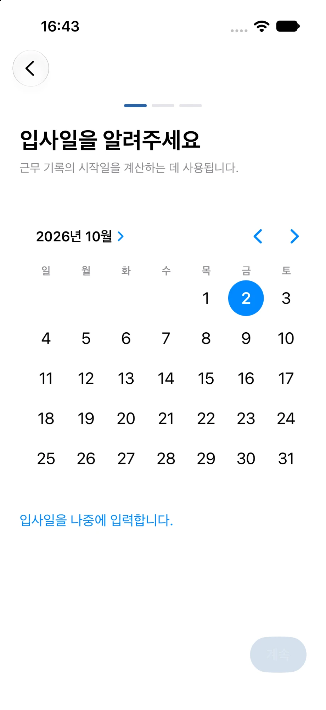
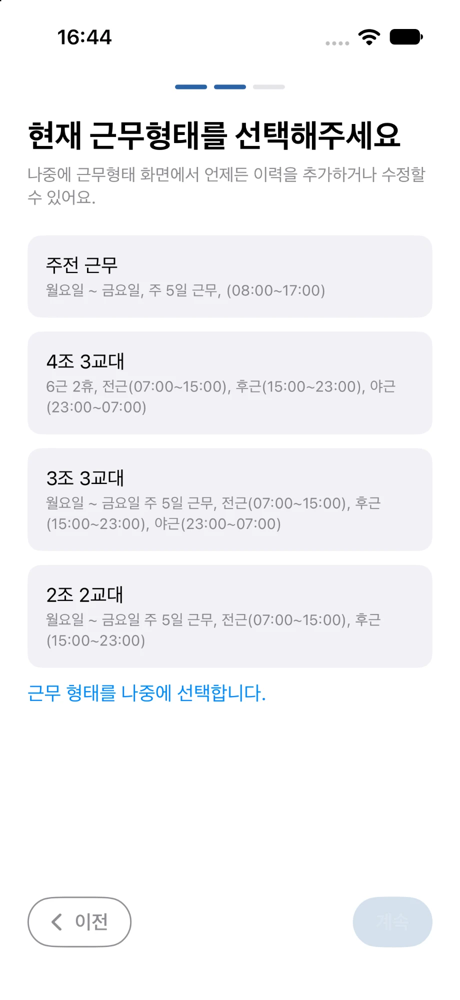
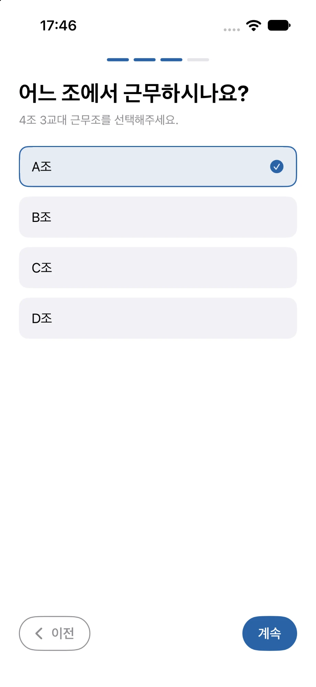
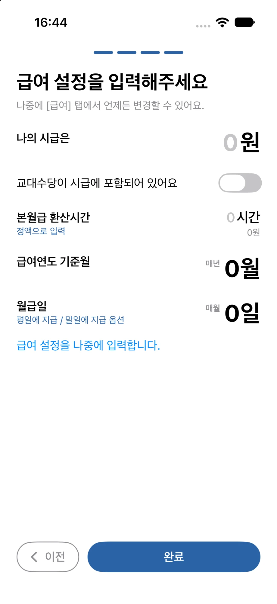

초기 설정 사용법
-
1 / 4
입사일을 설정합니다
근무일정을 언제부터 적용할지 기준이 되는 날짜를 선택합니다.
실제 입사일이나 현재 근무형태가 시작된 날짜를 선택하면 이후 근무 기록의 시작 기준으로 사용됩니다.
지금 정하지 않아도 괜찮습니다. ‘입사일을 나중에 입력합니다.’를 선택하면 이 단계를 건너뛸 수 있으며, 이후 사이드 메뉴의 캘린더 > 근무형태 관리에서 다시 설정할 수 있습니다.

-
2 / 4
근무형태를 선택합니다
현재 근무 중인 형태를 선택합니다. 화면에는 주전 근무, 4조 3교대, 3조 3교대, 2조 2교대가 표시됩니다.
주전 근무 또는 교대근무 형태를 선택하면 해당 패턴을 기준으로 캘린더의 근무일정이 만들어집니다.
지금 정하지 않으려면 ‘근무 형태를 나중에 선택합니다.’를 이용해 건너뛸 수 있으며, 이후 사이드 메뉴의 캘린더 > 근무형태 관리에서 언제든 다시 설정할 수 있습니다.

-
3 / 4
나의 근무조를 선택합니다
교대근무를 선택했다면 현재 자신이 속한 근무조를 선택합니다.
같은 교대근무 형태라도 선택한 조에 따라 캘린더에 표시되는 근무 순서가 달라집니다.
조 선택이 필요하지 않은 근무형태에서는 이 단계가 표시되지 않습니다.

-
4 / 4
기본 급여를 설정합니다
예상급여 계산에 사용할 기본 급여 정보를 설정합니다.
지금 입력하지 않아도 이후 [급여] 탭에서 언제든 다시 변경할 수 있습니다.
- 나의 시급은
- 예상급여 계산에 사용할 기본 시급을 입력합니다.
- 교대수당이 시급에 포함되어 있어요
- 시급에 교대수당이 포함되어 있다면 이 옵션을 켭니다. 주전 근무와 교대근무 사이에서 근무형태가 바뀌는 경우에도 설정한 기준을 이용해 예상급여와 O/T 금액을 계산합니다.
- 본월급 환산시간
- 시급을 기준으로 기본 월급을 계산할 때 사용할 월 환산시간을 설정합니다. 시간 대신 ‘정액으로 입력’을 선택해 기본 월급을 금액으로 입력할 수도 있습니다.
- 급여연도 기준월
- 매년 변경되는 급여 기준을 어느 달부터 새 급여연도로 볼지 선택합니다. 급여 인상 등 연도별 급여 설정을 구분할 때 사용됩니다.
- 월급일
- 매달 급여를 받는 날짜를 설정합니다. 특정 날짜 대신 말일을 급여일로 사용할 수 있으며, 급여일이 휴일일 때 평일에 지급하는 방식도 설정할 수 있습니다.
초기설정에서 입력한 급여 정보는 이후 [급여] 탭에서 다시 변경할 수 있습니다.
